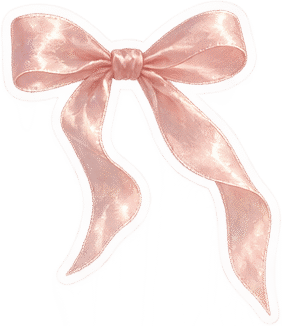
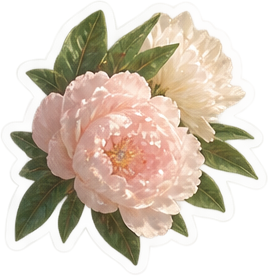
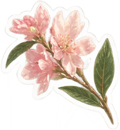
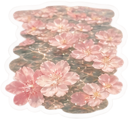
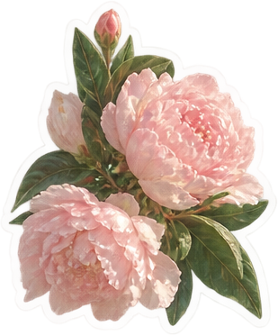
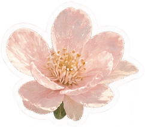
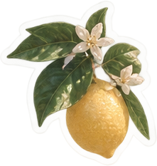
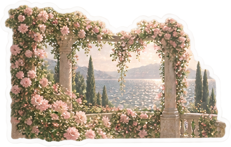

بعد الكيراتين والصبغةكل شي فيه من اللي عندك أصلًا. لا منتج جديد، ولا بروتين زيادة.
السجل محفوظ على هذا الجوال فقط. انسخي النسخة والصقيها بملاحظاتك كل فترة — مسح بيانات المتصفح يمسحها.

ثلاث غسلات بالأسبوع هو السقف. حرّكي الأيام حسب جدولك،
بس لا تلصقين غسلتين ورا بعض.
بالترتيب من ١ إلى ٥. لا تقفزين خطوة ولا تبدّلين الترتيب.
يشيل التراكم عشان الماسك اللي بعده يدخل الشعرة.
الماسك يحتاج شعر «معصور» — رطب بس ما ينقّط.
هذا هو «الترميم». ببتيد واحد بالشاور — لا K18 معه ولا ماسك ثاني فوقه.
بعد ما تطلعين من الحمام.
يقفل فوق الحليب ويعطي الانزلاق للتمشيط.
لو رجعتِ K18 (بعد القصّ): بدّلي الخطوة ٣ به — كبسة لكل قسم، ٤ دقائق بلا شطف، ثم Kérastase ٥ دقائق فوقه واشطفي الكل، وكمّلي ٤ و٥. K18 وL'Oréal ما ينحطون بنفس الشاور.
خفيفة ومرطّبة فقط. بلا أي شي فيه ببتيد أو بروتين — ذاك يوم الترميم بس.
الترطيب هنا = Kérastase (الخطوة ٣) + الحليب والسيروم. ما فيه بلسم منفصل عمدًا — بلسم فوق ماسك يثقّل شعرك.
نفس طريقة الشامبو بالترميم بالضبط. Horsetail أخفّ على الشعرة؛ لو الفروة حكّت منه، Glycolic Gloss.
ضغط من فوق لتحت بين كفّينك. لا فرك ولا لفّ. جاهز لما ما ينقّط.
ترطيب وتغليف. مو ترميم — وهذا المطلوب اليوم.
برّا الحمام، بعد عصرة ثانية بالقميص.
شعرك أشقر رمادي — التونر (Olaplex No.4P): كل أسبوعين، في غسلة طبيعية، مكان Horsetail. قدّ حبة الجوز مخفّفة بكفّينك — التوزيع المتساوي مهم وإلا يطلع اللون مبقّع — على الفروة، والرغوة تنزل على الأطوال بالعصر بين الكفّين لا بالفرك. أول مرة دقيقة وحدة بالمؤقت وشوفي اللون بضوء النهار — المسامي يمسك البنفسجي بسرعة. بعدها ٢–٣ دقائق، ما تتعدّين ٣. اشطفي، ثم Kérastase ٥ دقائق إلزامي. مو يوم الترميم، ومو كل غسلة.
لو حسّيتيه ناشف بعدها — حسب النوع:
قشّ وخشن ويتكسّر = بروتين زائد → أشّري «إحساس قشّ»، والترميم الجاي يصير غسلة طبيعية (أسبوع بلا ببتيد).
ناشف بس ناعم وهايش = ترطيب ناقص → المرة الجاية Kérastase ٧ دقائق بدل ٥ (مرة وحدة)، وسيروم ٤ ضغطات.
الفروة تشدّ والجذور ناشفة = الشامبو → نصّ الكمية، أو خفّفيه بشوي ماي بكفّك.
ما تسوينه: ماسك Elvive، بلسم فوق الماسك، زيت قبل الحليب، أو غسلة ثانية. ولو مو متأكدة: اختبار الخصلة بالصيانة يفصل.
لو احتجتِ ثالثة: زيدي غسلة طبيعية — ولا تزيدين الترميم أبدًا. وخلّي بين كل غسلتين يوم على الأقل. لو السبب دهون الفروة: Elvive Hyaluron Pure على الجذور فقط، ما يلمس الأطوال.

ما يخترق قبل ما يغلّف — ماسك الببتيد يدخل الشعرة، فيحتاجها عارية. لهذا بلا بلسم قبله، والحليب والسيروم بعده.
مائي قبل زيتي — الحليب ينتشر ويعطي الانزلاق، والسيروم يقفل فوقه. لا العكس.
لا تخلطين الشاورين — شعرك مشبع بروتين، والببتيد مرة بالأسبوع هو السقف.
«بهتان اللون ٠–٣» — ولا منتج عندك يغيّر اللون (ما فيه صبغة ولا أكسجين). الرقم تقدير من المكوّنات لخطر بهتان الصبغة مع الوقت، مو قياس: ٠ ماسك وليف-إن · ١ شامبو بلا سلفات أو سلفات واحد · ٢ سلفاتان أو منظّف عميق. وعلى الأطوال كلها تقريبًا ٠ لأن الشامبو على الفروة فقط. الماي الحار والشمس يبهّتون أكثر من كل هذي.
هنا يتقرّر شكل الشعرة لين الغسلة الجاية — الشعرة المبلولة أضعف ما تكون.
ضغط بالكفّين من فوق لتحت. لا فرك، ولا لفّة منشفة فوق الراس — الشدّ يكسر من عند الجذر.
بعد الحليب والسيروم، خصلة خصلة من الأطراف لفوق. وهذي آخر مرة تمشطينه مبلول.
مفرود على كتفج، بلا ربطة وبلا لفّ. الربطة على المبلول تطبع انكسار يبقى.
لما يكون الشعر شبه ناشف وباقي رطوبة خفيفة.

Keratin · Hydrolyzed protein · Amino acids · Collagen
هذي اللي تنقل شعرك من «ما يتدهور» إلى «يتحسّن».
الأسبوعان الأولان مو مقياس — اللي انكسر انكسر. اللي تقيسينه هو الشعر الطالع بعدين.

أسرع مكسب. التقصّف يصعد لأعلى لو تركتيه.
هو اللي يحدّد سمك الشعر القادم — لا أي ماسك.
